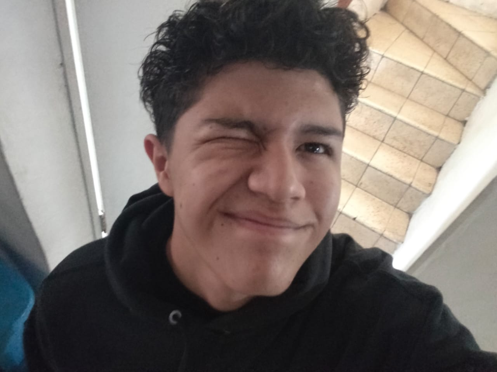

Soy Liam Nazareth Huerta Zuñiga, en este momento de mi vida me encuetro cursando el segundo semestre de preparatoria (en la carrera de contabilidad), mis pasiones son la musica, el basketball y hasta cierto punto la literatura; se podria decir que actualmente mi mayor interes es entrar en la seleccion varonil de basketball de mi preparatoria 🏀🏆
Logros academicos: Ganar el concurso LIMATEJ de matematicas a Kivek regional, y obtener un reconocimeto por mi promedio de primer semestre en la preparatoria (son solo dos pero trabajo para ir por mas). Retos: Tener un mejor manejo de mi temperamento y la interaccion con mis compañeros de aula.
Tengo claro cuales son mis metas que son tres, en primer lugar terminar mi carrera en contabilidad con un promedio destacable y asi demostrar que a pesar de ser dificil en un principio, no me rendi y lo logre; segundo seria el hecho de formar parte de la seleccion varonil de basketball en mi preparatoria. Por ultimo, empezar mi emprendimiento independiente y asi tener un futuro claro pero sin apresurarme.
Sin duda la preparatoria me ha dejado multiples lecciones, que me han sido una gran fuente de claridad y fortaleza cuando más lo necesite, desde una discusión que me sembro los pies en la tierra para nunca confiarme demasiado de nadie; hasta el inicio de una etapa muy dificil en mi vida pero que fue necesaria para mi crecimiento personal y emicional 🧠💞🫂.
Como detalle extra, me gustaria dejar esta canción que cada vez que la escucho me recuerda el porque soy quien soy.Fantasmas -HUMBE